source("scripts/takehome3_extensions.R")
source("scripts/takehome3_figures.R")
library(patchwork)
library(leaflet)
library(knitr)
theme_set(theme_minimal(base_size = 12) +
theme(panel.grid.minor = element_blank(),
plot.title = element_text(face = "bold", size = 14),
plot.subtitle = element_text(size = 11),
legend.position = "bottom"))
fmt <- function(x) format(round(x), big.mark = ",", scientific = FALSE, trim = TRUE)
pct <- function(x) sprintf("%.1f%%", 100 * x)
analysis <- th3_prepare()
models <- th3_fit_models(analysis)
extensions <- th3_extend(analysis, models)
res <- th3_save_results(analysis, models, extensions)
access800 <- extensions$access_summary[radius_m == 800]
main_scenario <- extensions$scenario$stations
largest_gain <- main_scenario[new_site == FALSE][which.max(change)]
largest_loss <- main_scenario[new_site == FALSE][which.min(change)]
test_score <- models$metrics[model == models$selected & period == "October test"]
historical_score <- models$metrics[model == "Historical OD benchmark" & period == "October test"]
outline <- st_union(analysis$land)Take home Exercise 3: Geospatial Analytics for Urban Sustainability
Station choice and the proposed Jurong Region and Cross Island lines
Research question and study design
Given the trips starting at existing stations, how might the JRL and CRL change passengers’ choice of destination station, and which existing stations face the largest change?
The assignment calls for a calibrated probabilistic spatial interaction model, a future station scenario and an assessment of its impact on the existing network. I combine the flow preparation in Chapter 15, the calibration approach in Chapter 16 and the Huff model in Chapter 18, then test a model with several station attributes.
The outcome is weekday destination arrivals recorded in the train OD data. This is a station ridership measure, but it is not platform load, transfer volume or all daily station entries. Origins are observed boarding stations, not residential addresses. Each origin’s local market potential is its total recorded outgoing trips in the chosen month.
This choice makes the observed flows directly available for calibration. It also sets a clear limit: a scenario with fixed origins estimates redistribution of existing demand. It cannot, by itself, estimate trips generated by new homes, new boarding stations or a shift from cars to rail.
Analysis sequence
- Reconcile station identities, dates, geometries and units.
- Build existing and expanded interaction tables using the same origin IDs.
- Calibrate with August 2026 weekdays. Use September to choose between the calibrated Huff and extended MCI models.
- Evaluate the chosen specification on October without refitting its coefficients.
- Apply the chosen model to a clearly defined future choice set and compare both scenarios under the same demand assumption.
- Test whether the planning conclusions depend on model and spatial assumptions.
Reproducible setup
The script below contains the full preparation and modelling functions. The report runs those functions from the raw data on every render. The R scripts remain in the project for inspection and reuse. Rendering does not call the live LTA API or require a secret key.
Data and quality checks
What the files measure
| Input | Use | Important limit |
|---|---|---|
| LTA station OD, August to October 2026 | Observed choices and origin market totals | Monthly counts by day type and hour, not average daily volumes |
| LTA station tap in and tap out files | Independent accounting check | These totals are not identical to the OD sums |
| Station coordinates linked in the assignment | Existing and planned station locations | The March 2026 operating status labels are older than the ridership period |
| LTA September 2026 station polygons | Spatial reference | A platform polygon is not a separate physical station |
| LTA bus stops | Bus stops within 800 metres as a feeder access proxy | Counts are not service frequency or capacity |
| HDB building polygons | Nearby built footprint as an urban form proxy | Includes more than residential buildings; does not measure households |
| MP2019 subzones already in the project | Map context and regional description | Not a current housing development forecast |
The downloaded HDB property table is retained but is not joined on block number alone. Its street names do not match the polygon file’s street codes. Leaving this join unresolved is preferable to attaching the wrong household count to a building. The model uses a clearly labelled footprint variable instead.
The source manifests in the project retain official URLs, retrieval dates and exact file checksums. Compressed source snapshots are expanded and checked automatically when the uncompressed copies are absent.
File and geometry checks
quality <- fread("data/takehome3/checks/ridership_quality.csv")
kable(quality, caption = "Checks on the six raw ridership files")| month | station_rows | od_rows | station_codes | od_origins | od_destinations | missing_cells | duplicate_keys | negative_volumes |
|---|---|---|---|---|---|---|---|---|
| 2026-08 | 7379 | 906985 | 185 | 185 | 185 | 0 | 0 | 0 |
| 2026-09 | 7376 | 887478 | 185 | 185 | 185 | 0 | 0 | 0 |
| 2026-10 | 7380 | 910115 | 185 | 185 | 185 | 0 | 0 | 0 |
spatial_quality <- fread("data/takehome3/checks/spatial_quality.csv")
kable(spatial_quality[, .(layer, features, empty, invalid,
transformed_epsg, invalid_after_repair)],
caption = "Geometry checks before and after repair")| layer | features | empty | invalid | transformed_epsg | invalid_after_repair |
|---|---|---|---|---|---|
| train_stations | 234 | 0 | 0 | 3414 | 0 |
| bus_stops | 5205 | 0 | 0 | 3414 | 0 |
| station_exits | 613 | 0 | 0 | 3414 | 0 |
| hdb_buildings | 13436 | 0 | 4 | 3414 | 0 |
There are no missing cells, repeated record keys or negative counts in the downloaded ridership tables. Four HDB geometries required repair. Distances and buffers are calculated in EPSG:3414, in metres. The LTA layers have a valid SVY21 WKT even though they lack a numeric EPSG label; their coordinates are transformed using that definition, not simply relabelled.
One physical station, one destination
The raw files use 185 station codes, but they represent 184 named station complexes. Stevens has separate DT10 and TE11 records at the same location. I merge them before constructing distances and flows. This avoids two identical station choices and a zero distance between them.
CC30, CC31 and CC32 already have observed flows during the study period, although the coordinate repository puts them in its future list. They enter the observed baseline. CC33 and CC34 are matched through known codes in their composite station IDs. These exceptions remain in the audit table.
identity_check <- data.table(
item = c("Raw ridership IDs", "Physical baseline stations", "JRL line stations",
"CRL Phase 1 line stations", "Existing sites receiving a new line",
"Additional physical sites", "Expanded physical station choice set"),
count = c(nrow(analysis$crosswalk), nrow(analysis$stations), 24, 12,
sum(!is.na(analysis$future$existing_id)),
sum(analysis$expanded$new_site), nrow(analysis$expanded)))
kable(identity_check)| item | count |
|---|---|
| Raw ridership IDs | 185 |
| Physical baseline stations | 184 |
| JRL line stations | 24 |
| CRL Phase 1 line stations | 12 |
| Existing sites receiving a new line | 7 |
| Additional physical sites | 29 |
| Expanded physical station choice set | 213 |
The brief’s 36 line stations add 29 physical sites; seven are interchanges at existing sites. The future table increases the line count at those seven sites rather than creating duplicate competing stations. Forest Hill and later CRL phases remain in the raw download but are outside the brief’s 24 plus 12 core scope. This is a scenario definition, not a claim about a guaranteed opening year.
sites <- analysis$sites
sites$map_group <- ifelse(sites$new_site,
ifelse(grepl("JRL", sites$scenario_group), "JRL new site", "CRL new site"),
ifelse(grepl("upgraded", sites$scenario_group), "Existing interchange", "Existing station"))
ggplot() + geom_sf(data = outline, fill = "#f1f3f2", color = "#afb8b4", linewidth = 0.2) +
geom_sf(data = sites, aes(color = map_group, shape = map_group), size = 2.2, alpha = 0.9) +
scale_color_manual(values = c("Existing station" = "#66716d", "Existing interchange" = "#a3385c",
"JRL new site" = "#11796e", "CRL new site" = "#cf8520")) +
scale_shape_manual(values = c("Existing station" = 16, "Existing interchange" = 8,
"JRL new site" = 17, "CRL new site" = 15)) +
coord_sf(datum = NA) + labs(color = NULL, shape = NULL,
title = "The proposed network adds sites and upgrades existing interchanges",
caption = "Sources: LTA; assignment coordinate repository. Geometry: EPSG:3414.")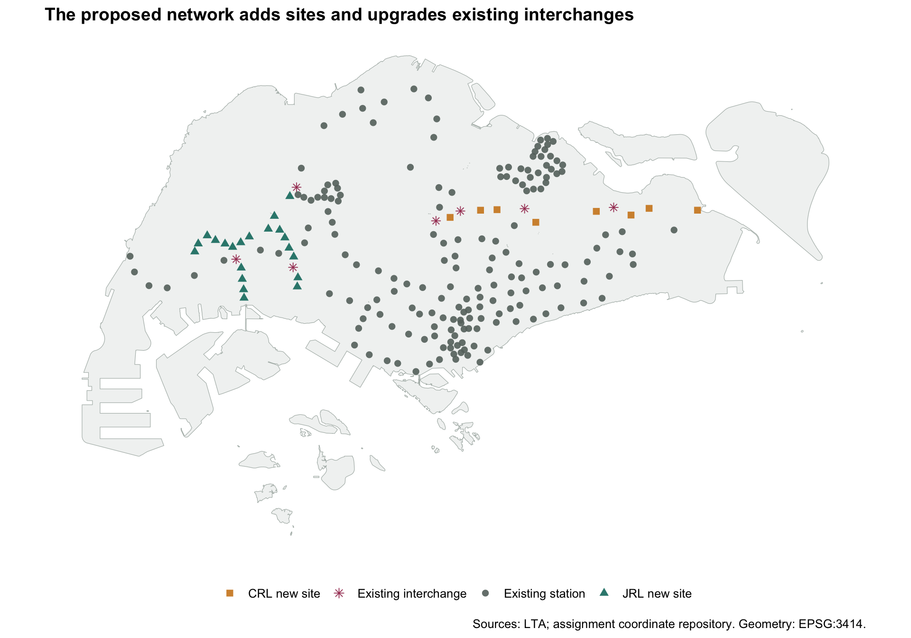
The two corridors serve different parts of the island. JRL adds a dense group of western sites. CRL Phase 1 connects a chain across the north and east. Their existing interchanges matter because an extra line can change a station’s attraction even when its location stays the same.
What is excluded and what is not
The model uses all hourly bands for weekdays only. Weekend and holiday records are retained for description, not mixed into the calibration target. After merging Stevens, a small number of journeys start and end at the same physical station. I exclude these from both demand totals and destination observations.
kable(analysis$exclusions, caption = "Exact exclusions after resolving physical station identity")| YEAR_MONTH | DAY_TYPE | raw_rows | raw_trips | same_station_trips |
|---|---|---|---|---|
| 2026-08 | WEEKDAY | 471262 | 62846359 | 231 |
| 2026-08 | WEEKENDS/HOLIDAY | 435723 | 27315022 | 117 |
| 2026-09 | WEEKENDS/HOLIDAY | 412083 | 19095879 | 95 |
| 2026-09 | WEEKDAY | 475395 | 66784543 | 238 |
| 2026-10 | WEEKENDS/HOLIDAY | 427635 | 22341221 | 126 |
| 2026-10 | WEEKDAY | 482480 | 67946944 | 247 |
An unreported origin destination pair is represented by zero in the monthly weekday matrix. This means no recorded trip in the supplied data, not proof that the journey is impossible. Self choices are excluded from the choice set, rather than assigning them an arbitrary positive distance.
Two valid sources are not the same outcome
reconciliation <- fread("data/takehome3/checks/od_station_reconciliation.csv")
recon_summary <- reconciliation[, .(
rows_with_difference = sum(tap_in_minus_od != 0 | tap_out_minus_od != 0),
total_tap_in = sum(tap_in), total_OD_departures = sum(od_origin_total),
largest_absolute_difference = max(abs(tap_in_minus_od))), by = YEAR_MONTH]
kable(recon_summary)| YEAR_MONTH | rows_with_difference | total_tap_in | total_OD_departures | largest_absolute_difference |
|---|---|---|---|---|
| 2026-08 | 370 | 91420120 | 90161381 | 72618 |
| 2026-09 | 370 | 87051437 | 85880422 | 78165 |
| 2026-10 | 370 | 91508572 | 90288165 | 50627 |
I do not blend these measures. All model targets and origin totals below come from the OD table, so the accounting is internally consistent. Differences from the station volume feed are documented, but their cause is not established by these files.
Before modelling: the observed pattern
Time of day
hourly <- copy(analysis$hourly)
hourly[, share := trips / sum(trips), by = .(YEAR_MONTH, DAY_TYPE)]
ggplot(hourly, aes(TIME_PER_HOUR, share, color = YEAR_MONTH)) +
geom_line(linewidth = 0.9) + facet_wrap(~DAY_TYPE, nrow = 1) +
scale_y_continuous(labels = scales::label_percent()) +
scale_x_continuous(breaks = seq(0, 24, 4)) +
scale_color_manual(values = c("#11796e", "#cf8520", "#a3385c")) +
labs(x = "Departure hour", y = "Share of recorded trips", color = "Month",
title = "Compare the daily shape, not raw monthly totals")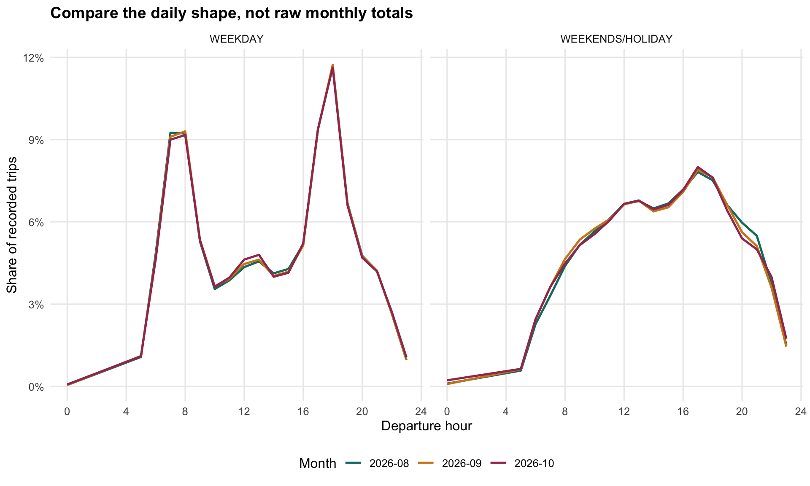
Normalising each curve removes differences in the number of weekdays and holidays between months. It does not turn the totals into average daily counts. The weekday pattern is the population of trips used in the models; a different time period or travel purpose may produce different station choices.
Where weekday trips end
arrivals <- analysis$train[, .(arrivals = sum(trips)), by = destination_id]
arrivals <- merge(arrivals, analysis$stations[, .(station_id, station_name, longitude, latitude)],
by.x = "destination_id", by.y = "station_id")
top_arrivals <- arrivals[order(-arrivals)][1:15]
ggplot(top_arrivals, aes(arrivals, reorder(station_name, arrivals))) +
geom_col(fill = "#11796e", width = 0.7) +
scale_x_continuous(labels = scales::label_number(scale = 1e-6, suffix = "m")) +
labs(x = "Recorded arrivals in the month", y = NULL,
title = "Destination demand is not evenly distributed")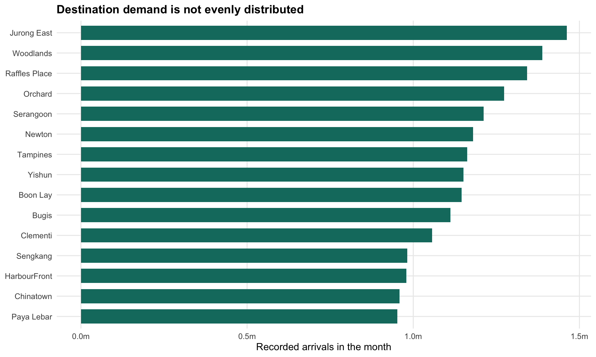
Jurong East has the largest recorded August weekday destination total, at 1,461,903 trips. These station totals are sums of journeys, not unique people. A few busy destinations can dominate an overall error measure, so I examine both station totals and individual OD allocations.
Distance is a proxy, not a route
distance_profile <- copy(analysis$train)
distance_profile[, band := cut(distance_km, breaks = seq(0, 60, 2), right = FALSE)]
distance_profile <- distance_profile[, .(trips = sum(trips)), by = band]
distance_profile[, share := trips / sum(trips)]
ggplot(distance_profile, aes(band, share)) + geom_col(fill = "#cf8520") +
scale_y_continuous(labels = scales::label_percent()) +
labs(x = "Straight line distance band (km)", y = "Share of trips",
title = "Travel between stations is not the same as walking to a station") +
theme(axis.text.x = element_text(angle = 45, hjust = 1, size = 9))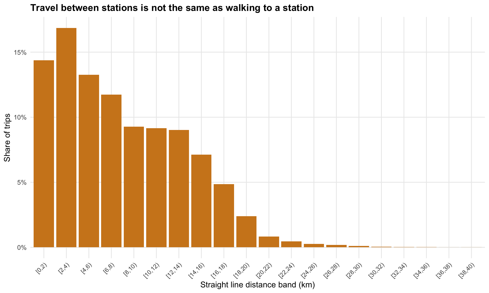
The distance variable measures separation between station points. It does not measure the rail route, transfer time or fare. The fitted decay therefore describes this geographic proxy. It should not be read as the effect of adding one kilometre of actual train travel.
Preparing the required model tables
The model uses a full set of eligible origin destination pairs, including unreported pairs with zero observed trips. Both choice sets keep the same 184 origins. Distances and station attributes change only where the scenario requires them to change.
table_inventory <- data.table(
table = c("Existing interaction table", "Expanded interaction table", "Origin market table", "Destination observation table"),
rows = c(nrow(analysis$existing_pairs), nrow(analysis$future_pairs),
uniqueN(analysis$train$origin_id), nrow(analysis$stations)),
identifier = c("origin_id + destination_id", "origin_id + destination_id", "origin_id", "destination_id"))
kable(table_inventory)| table | rows | identifier |
|---|---|---|
| Existing interaction table | 33672 | origin_id + destination_id |
| Expanded interaction table | 39008 | origin_id + destination_id |
| Origin market table | 184 | origin_id |
| Destination observation table | 184 | destination_id |
kable(head(analysis$train[, .(origin_id, destination_id, distance_km,
bus_attraction, n_lines, hdb_footprint_km2, trips, market_potential)], 6))| origin_id | destination_id | distance_km | bus_attraction | n_lines | hdb_footprint_km2 | trips | market_potential |
|---|---|---|---|---|---|---|---|
| BP1/NS4 | BP10 | 2.9491593 | 35 | 1 | 0.2736107 | 6640 | 782383 |
| BP1/NS4 | BP11 | 2.8322791 | 28 | 1 | 0.2307656 | 7044 | 782383 |
| BP1/NS4 | BP12 | 2.2498785 | 45 | 1 | 0.2847541 | 5984 | 782383 |
| BP1/NS4 | BP13 | 2.0237781 | 57 | 1 | 0.2789604 | 2793 | 782383 |
| BP1/NS4 | BP2 | 0.5440860 | 54 | 1 | 0.2998996 | 6031 | 782383 |
| BP1/NS4 | BP3 | 0.8905879 | 41 | 1 | 0.2497960 | 11013 | 782383 |
The CSV files are saved under data/takehome3/prepared. The expanded table has 213 destination sites. It has not been filled with invented future observations.
Attraction variables
1 + bus_800: the number of bus stops within 800 metres, plus one to allow a logarithm when none are present.n_lines: distinct rail systems serving the station; branch codes belonging to one line are not counted twice.log(1 + 100 * hdb_footprint_km2): a transformed measure of nearby HDB building footprint. The factor 100 expresses area in units of 10,000 square metres.is_lrt: whether the site is served only by LRT, allowing a different scale of attraction from MRT stations.
The 800 metre radius is a consistent geographic comparison window, not a measured walking catchment. HDB area is not floor area, population, dwelling count or employment. The same definitions are applied to existing and proposed sites so that future attraction does not require future observed ridership.
attributes <- melt(analysis$stations[, .(station_name, bus_800, n_lines, hdb_footprint_km2)],
id.vars = "station_name", variable.name = "attribute")
ggplot(attributes, aes(value)) + geom_histogram(bins = 20, fill = "#5b817c", color = "white") +
facet_wrap(~attribute, scales = "free", nrow = 1) +
labs(x = NULL, y = "Stations", title = "Station attributes available without using observed arrivals")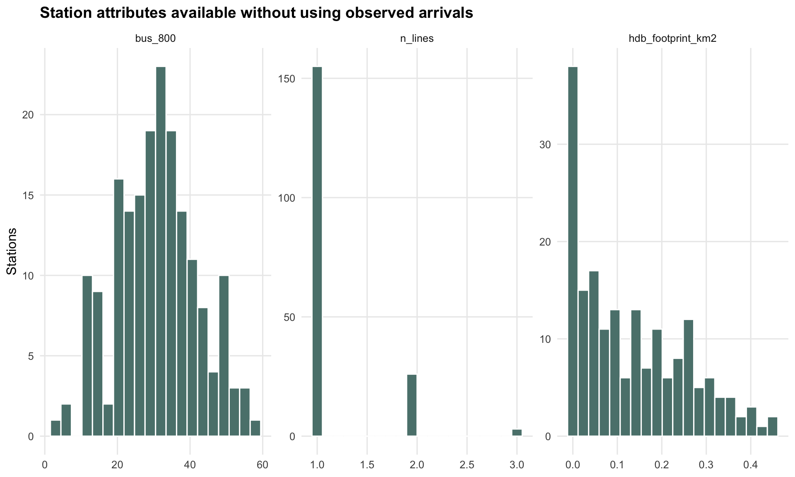
These attributes describe physical access and surrounding development. They omit jobs, retail activity, service frequency and many other reasons for choosing a destination. The validation results below show how much of the observed pattern they can explain.
Calibrating probabilistic station choice
For origin \(i\) and eligible destination \(j\), the calibrated Huff specification is
\[p_{ij} = \frac{(1+B_j)^\alpha d_{ij}^{\beta}} {\sum_{k \ne i}(1+B_k)^\alpha d_{ik}^{\beta}}.\]
\(B_j\) is the bus stop count. A negative \(\beta\) means lower probability as distance increases. The extended MCI model adds line count, HDB footprint and the LRT indicator to the log attraction term. Predicted flows are \(\widehat T_{ij} = M_i p_{ij}\), where \(M_i\) is the observed outgoing market at origin \(i\).
I follow Chapter 16.8.6 and use glm(..., family = poisson(link = "log")). factor(origin_id) gives each origin its own intercept, replacing the course example’s origin zone variable. The other terms describe distance and destination attraction. After normalisation, the origin intercept cancels and the fitted flows have the Huff or MCI probability form above.
Zero observed flows remain in the response because the model does not take log(trips). Predictor transformations are explicit: distance has a 0.1 km floor and counts that can be zero use log1p(). I do not use a destination intercept, because there is no observed flow from which to estimate an intercept for an unopened station.
formula(models$huff)trips ~ factor(origin_id) + log_distance + log_bus
<environment: 0x152fc7ed0>formula(models$mci)trips ~ factor(origin_id) + log_distance + log_bus + log_lines +
log_hdb + is_lrt
<environment: 0x152fc7ed0>kable(models$coefficients, digits = 3,
caption = "August attraction and distance coefficients; origin intercepts omitted")| model | term | estimate |
|---|---|---|
| Huff | log_distance | -0.728 |
| Huff | log_bus | 0.662 |
| MCI | log_distance | -0.724 |
| MCI | log_bus | 0.425 |
| MCI | log_lines | 1.029 |
| MCI | log_hdb | 0.203 |
| MCI | is_lrt | -1.936 |
kable(models$diagnostics, digits = 2,
caption = "Convergence and Pearson dispersion checks")| model | converged | iterations | pearson_dispersion |
|---|---|---|---|
| Huff | TRUE | 6 | 5287.79 |
| MCI | TRUE | 7 | 3938.55 |
A Pearson dispersion much greater than one warns that the simple Poisson variance assumption is inadequate. I therefore do not use its small standard errors or significance stars as evidence of a reliable forecast. I focus on prediction errors in later months. Coefficients describe associations, not causal effects of building bus stops or rail lines.
ggplot(models$coefficients, aes(estimate, term, color = model)) +
geom_vline(xintercept = 0, color = "grey60", linetype = 2) +
geom_point(position = position_dodge(width = 0.5), size = 2.5) +
scale_color_manual(values = c("Huff" = "#cf8520", "MCI" = "#11796e")) +
labs(x = "Log utility coefficient", y = NULL, color = NULL,
title = "Distance and attraction are estimated together")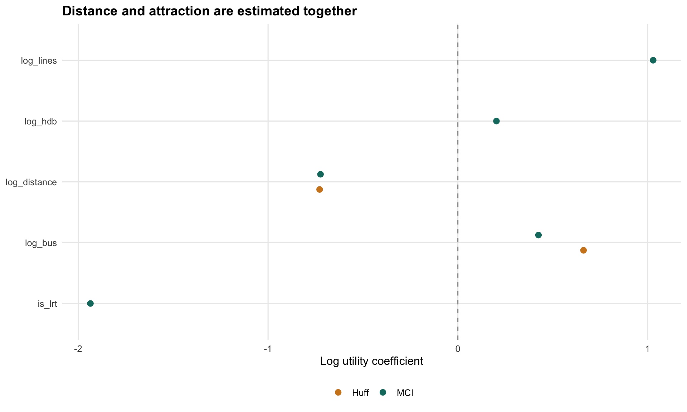
The distance coefficient and the attraction coefficients operate jointly. A bus stop association in the small Huff model can change after line count and development are added. This is why a single coefficient should not be interpreted without the other variables in its specification.
Probability and accounting checks
probability <- th3_probabilities(analysis$train, models$betas[[models$selected]])
check <- copy(analysis$train[, .(origin_id, market_potential)])
check[, probability := probability]
check <- check[, .(probability_sum = sum(probability),
expected_flow = sum(market_potential * probability),
origin_total = unique(market_potential)), by = origin_id]
kable(data.table(
check = c("Minimum origin probability sum", "Maximum origin probability sum",
"Largest origin mass difference", "Poisson fit versus probability reconstruction difference"),
value = c(min(check$probability_sum), max(check$probability_sum),
max(abs(check$expected_flow - check$origin_total)), models$poisson_probability_check)), digits = 8)| check | value |
|---|---|
| Minimum origin probability sum | 1e+00 |
| Maximum origin probability sum | 1e+00 |
| Largest origin mass difference | 0e+00 |
| Poisson fit versus probability reconstruction difference | 2e-08 |
Mass conservation is a property of this model, not evidence of accuracy. A model can distribute exactly the right total number of trips to the wrong destinations.
Validation and what it means
Keep the model choice separate from the final month
August is the calibration month. September selects between the two calibrated structural models by average negative log probability per recorded trip. Lower is better. October then checks the fixed coefficients. October origin totals are supplied, so this is conditional allocation validation, not a forecast of unknown total demand.
The comparison includes equal choice, the Hands-on style fixed Huff model with exponents 1 and -2, and an August historical OD share benchmark. The historical benchmark uses a half trip smoothing count per eligible pair to avoid impossible zero probabilities in a later month. It is a useful existing network comparator, but has no observations for new sites.
score_table <- copy(models$metrics[period != "August calibration"])
score_table[, `:=`(station_WAPE = round(100 * station_WAPE, 2),
OD_WAPE = round(100 * OD_WAPE, 2))]
kable(score_table[, .(period, model, station_WAPE, station_RMSE, station_R2, OD_log_loss)],
digits = 3, caption = "WAPE is expressed as a percentage; RMSE is monthly arrivals")| period | model | station_WAPE | station_RMSE | station_R2 | OD_log_loss |
|---|---|---|---|---|---|
| September validation | Equal choice | 78.39 | 360108.85 | -0.011 | 5.209 |
| September validation | Fixed Huff | 74.51 | 373540.02 | -0.087 | 5.669 |
| September validation | Calibrated Huff | 74.51 | 350800.11 | 0.041 | 5.006 |
| September validation | Extended MCI | 50.09 | 267794.28 | 0.441 | 4.804 |
| September validation | Historical OD benchmark | 2.06 | 15607.95 | 0.998 | 4.116 |
| October test | Equal choice | 77.48 | 362299.21 | -0.011 | 5.209 |
| October test | Fixed Huff | 73.77 | 377217.19 | -0.095 | 5.657 |
| October test | Calibrated Huff | 73.72 | 353034.80 | 0.041 | 5.003 |
| October test | Extended MCI | 49.54 | 270436.07 | 0.437 | 4.806 |
| October test | Historical OD benchmark | 2.31 | 14905.23 | 0.998 | 4.127 |
Extended MCI is selected using September. Its October station WAPE is 49.5%, compared with 2.3% for the historical benchmark. The structural model improves on fixed Huff but does not explain much of the stable destination preference already present in the OD history. A future scenario built from it needs cautious interpretation.
scores <- models$metrics[period != "August calibration"]
p1 <- ggplot(scores, aes(station_WAPE, reorder(model, station_WAPE), fill = period)) +
geom_col(position = "dodge", width = 0.7) +
scale_x_continuous(labels = scales::label_percent()) +
scale_fill_manual(values = c("October test" = "#11796e", "September validation" = "#cf8520")) +
labs(x = "Station WAPE", y = NULL, fill = NULL)
p2 <- ggplot(scores, aes(OD_log_loss, reorder(model, OD_log_loss), fill = period)) +
geom_col(position = "dodge", width = 0.7) +
scale_fill_manual(values = c("October test" = "#11796e", "September validation" = "#cf8520")) +
labs(x = "OD log loss (lower is better)", y = NULL, fill = NULL)
p1 / p2 + plot_layout(guides = "collect")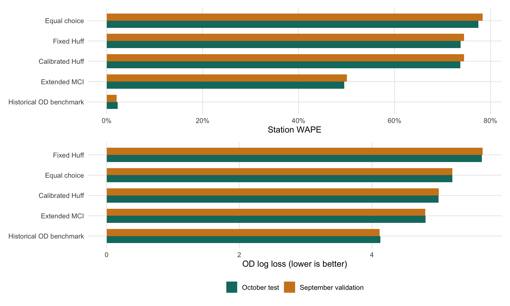
WAPE compares total arrivals at each station. OD log loss checks whether the model gives high probability to the destinations people actually choose from each origin. Good station totals alone could hide poor OD patterns. The historical benchmark’s advantage also warns against treating short term stability as proof of transferability to an unopened station.
Where the error remains
scatter <- models$station[period == "October test" & model != "Equal choice"]
ggplot(scatter, aes(observed, predicted)) +
geom_abline(intercept = 0, slope = 1, color = "#a3385c", linewidth = 0.7) +
geom_point(alpha = 0.6, size = 1.6, color = "#11796e") +
facet_wrap(~model, ncol = 2) + coord_equal() +
scale_x_continuous(labels = scales::label_number(scale = 1e-6, suffix = "m")) +
scale_y_continuous(labels = scales::label_number(scale = 1e-6, suffix = "m")) +
labs(x = "Observed arrivals", y = "Predicted arrivals",
title = "The structural models still miss important destination demand")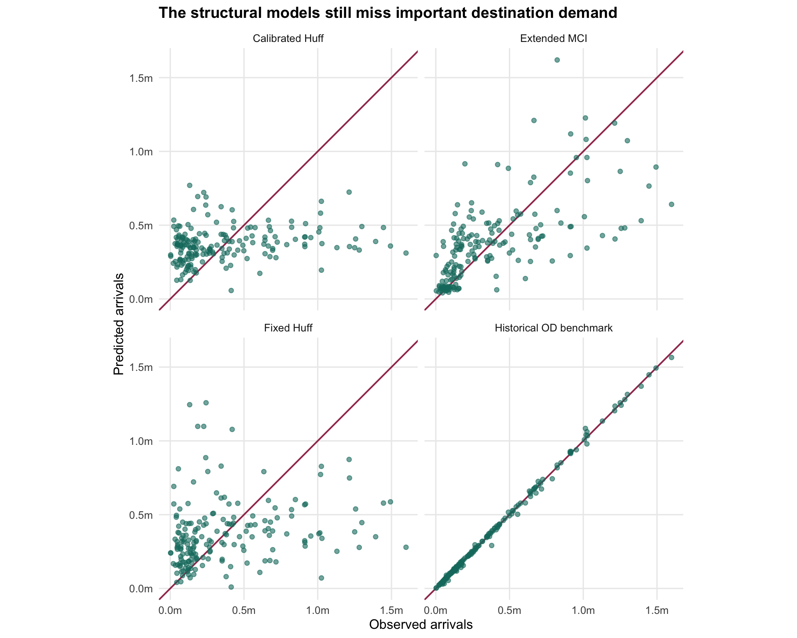
The equality line makes the size of the error visible without relying on correlation alone. A prediction can correlate with actual arrivals and still be too high or too low at most stations. The top destinations deserve particular attention because their absolute errors affect both planning and the network total error rate.
residual_sf <- st_as_sf(models$test_stations, coords = c("longitude", "latitude"),
crs = 4326, remove = FALSE) |> st_transform(3414)
ggplot() + geom_sf(data = outline, fill = "#f1f3f2", color = "#b9c0bd", linewidth = 0.2) +
geom_sf(data = residual_sf, aes(color = error / 1000, size = abs(error)), alpha = 0.85) +
scale_color_gradient2(low = "#286b9a", mid = "#f4f1eb", high = "#b83f58", midpoint = 0,
name = "Error (thousand arrivals)") +
scale_size_continuous(range = c(1.5, 7), guide = "none") +
coord_sf(datum = NA) + labs(title = "Large errors have locations, not just a single score")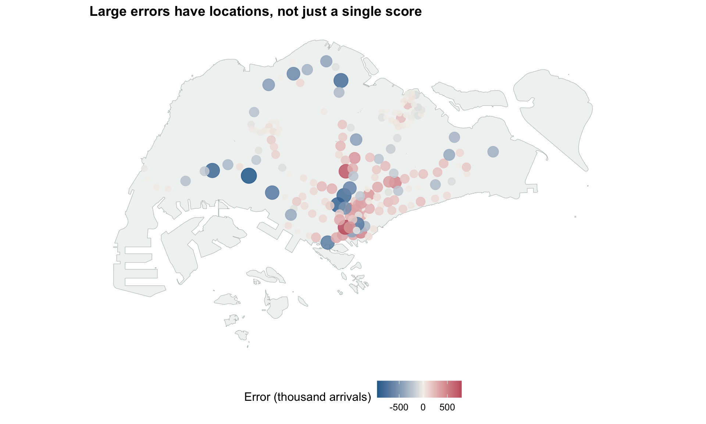
The map identifies places where the available attributes are insufficient. It does not establish why the error occurs. Employment, shopping, visitor activity and rail travel time are plausible missing factors, but this dataset does not measure their separate contributions.
errors <- models$test_stations[order(-abs(error))][1:10,
.(station_name, observed, predicted = round(predicted), error = round(error))]
kable(errors, caption = "Ten largest absolute October errors")| station_name | observed | predicted | error |
|---|---|---|---|
| Jurong East | 1598628 | 641124 | -957504 |
| Orchard | 1392682 | 530610 | -862072 |
| Boon Lay | 1215220 | 406469 | -808751 |
| Newton | 1281453 | 481539 | -799914 |
| Outram Park | 823174 | 1619562 | 796388 |
| Yishun | 1256947 | 478554 | -778393 |
| Caldecott | 197466 | 915879 | 718413 |
| Clementi | 1130008 | 429561 | -700447 |
| Raffles Place | 1445735 | 765096 | -680639 |
| HarbourFront | 1025012 | 344956 | -680056 |
Inspect individual stations
interactive <- models$test_stations
palette <- colorNumeric(c("#286b9a", "#f4f1eb", "#b83f58"),
domain = c(-max(abs(interactive$error)), max(abs(interactive$error))))
popup <- paste0("<b>", htmltools::htmlEscape(interactive$station_name), "</b><br>",
"October recorded arrivals: ", fmt(interactive$observed), "<br>",
"Conditional estimate: ", fmt(interactive$predicted), "<br>",
"Error: ", fmt(interactive$error), "<br>Model: ", models$selected)
leaflet(interactive, height = 520) |>
addProviderTiles(providers$CartoDB.Positron) |>
addCircleMarkers(lng = ~longitude, lat = ~latitude, radius = 6,
color = ~palette(error), fillOpacity = 0.85,
stroke = TRUE, weight = 1, popup = popup) |>
addLegend(pal = palette, values = ~error, title = "Predicted minus recorded", position = "bottomright")This map uses the same October results as the static residual map. The popup gives the observed value, conditional estimate and error together. It is an inspection aid, not another independent validation.
Future network scenario
A common demand total for both networks
I apply the August coefficients to two choice sets: 184 existing destinations and 213 destinations after the proposed additions. Both use October’s outgoing weekday trips from the same existing origins. The seven interchange sites gain one line. Bus access and HDB footprint remain at their observed levels.
This is a comparison under fixed demand, not an opening year forecast. It excludes future origin boardings, new housing, changed bus services and induced rail travel. Each station’s change is future model estimate minus baseline model estimate, not future estimate minus observed October ridership. This keeps the model’s existing errors separate from the scenario effect.
scenario_summary <- main_scenario[, .(baseline = sum(baseline),
future = sum(future), change = sum(change)), by = scenario_group]
kable(scenario_summary, digits = 0, caption = "Monthly weekday destination arrivals under fixed October origin totals")| scenario_group | baseline | future | change |
|---|---|---|---|
| Existing interchange upgraded | 3777464 | 5763362 | 1985898 |
| Existing | 64169233 | 54710803 | -9458430 |
| CRL Phase 1 | 0 | 2253779 | 2253779 |
| JRL original 24 | 0 | 5218752 | 5218752 |
stopifnot(abs(sum(main_scenario$change)) < 1e-5)The new physical sites receive 11.0% of the fixed demand, or about 7,472,531 monthly arrivals. Existing interchanges gain in aggregate, while other existing destinations lose allocation. The network total stays at 67,946,697. These are redistributed trips, not additional passengers attracted to public transport.
th3_plot_scenario(res)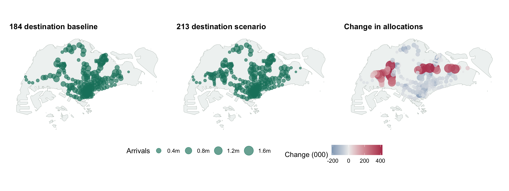
The western new sites account for about 5,218,752 allocated arrivals, compared with 2,253,779 at the new CRL sites. This comparison excludes the seven upgraded existing stations. It also reflects the different numbers and attributes of new sites, not a direct comparison of the two lines’ total patronage.
Changes at individual stations
th3_plot_impacts(res)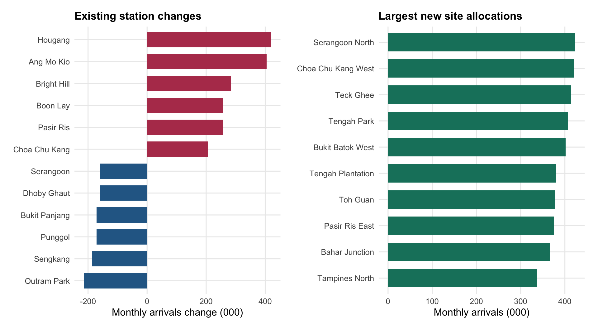
Hougang has the largest estimated existing station gain, about 420,222 arrivals. Outram Park has the largest decline, about 214,305. These rankings reflect the fitted attraction formula. In particular, interchange gains depend on the line count coefficient and do not directly measure transfer demand or platform crowding.
prediction_table <- main_scenario[order(-future), .(station_name, scenario_group,
baseline = round(baseline), future = round(future), change = round(change),
change_pct = round(change_pct, 1))]
DT::datatable(prediction_table, rownames = FALSE,
caption = "All 213 destination estimates. Baseline is zero at new sites, so percentage change is undefined.",
options = list(pageLength = 10, scrollX = TRUE))Where station markets change
Here a market is the allocation of trips from existing origin stations. I map the share assigned to all new sites and then examine the market of one existing destination. This is a discrete origin market, not a residential walking catchment or a new administrative boundary.
th3_plot_markets(res)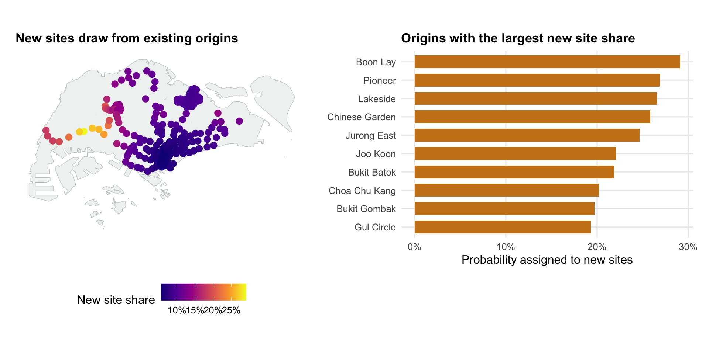
The highest probability destination changes at 23 of the 184 origins. That count is a summary of the model, not a count of passengers changing journeys. The probabilities retain the full distribution of choices, so an origin can allocate trips to several new destinations even when its most likely destination stays the same.
th3_plot_focus(res)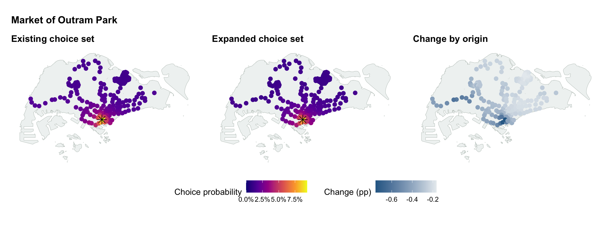
The maps show how Outram Park loses probability across its origin market. Adding choices reduces the share of an unchanged existing destination through the Huff denominator. Relative odds between two unchanged destinations remain constant for a given origin. This proportional substitution assumption helps explain the broad decline, but cannot represent a change in train routes or transfer behaviour.
Explore the scenario
x <- main_scenario
future_palette <- colorNumeric("YlGnBu", domain = x$future)
change_palette <- colorNumeric(c("#2a6894", "#f4f4f4", "#b53d5a"),
domain = c(-max(abs(x$change)), max(abs(x$change))))
future_popup <- paste0("<b>", htmltools::htmlEscape(x$station_name), "</b><br>",
htmltools::htmlEscape(x$scenario_group), "<br>Baseline estimate: ", fmt(x$baseline),
"<br>Expanded estimate: ", fmt(x$future), "<br>Change: ", fmt(x$change),
"<br>Monthly weekday arrivals, fixed demand scenario")
leaflet(x, height = 520) |>
addProviderTiles(providers$CartoDB.Positron) |>
addCircleMarkers(lng = ~longitude, lat = ~latitude, radius = 6, color = ~future_palette(future),
fillOpacity = 0.85, weight = 1, popup = future_popup, group = "Expanded arrivals") |>
addCircleMarkers(lng = ~longitude, lat = ~latitude, radius = 6, color = ~change_palette(change),
fillOpacity = 0.85, weight = 1, popup = future_popup, group = "Change from baseline") |>
addLayersControl(baseGroups = c("Expanded arrivals", "Change from baseline"),
options = layersControlOptions(collapsed = FALSE)) |>
hideGroup("Change from baseline") |>
addLegend(pal = future_palette, values = ~future, group = "Expanded arrivals", title = "Scenario arrivals") |>
addLegend(pal = change_palette, values = ~change, group = "Change from baseline", title = "Change in arrivals")The two layers share the same station estimates as the tables and static maps. Selecting a station shows its baseline, scenario estimate and difference together. The colour scale changes with the selected layer.
Value added analysis: access to stations
Does a high ridership allocation imply a large access gain?
The ridership model starts at existing boarding stations. It cannot tell us whether a new site brings nearby housing closer to rail. I therefore add a separate geographical accessibility comparison, building on Chapter 17. It asks where the expanded network reduces the distance from existing HDB buildings to their nearest station.
I use st_nearest_feature() to identify each building’s closest station, then st_distance(..., by_element = TRUE) to measure the distance in EPSG:3414. The same 13,436 building points enter both scenarios. Coverage is the number within 500, 800 or 1,000 metres. Improvements cannot be negative because every existing station remains available.
building_points <- analysis$hdb_points
existing_sites <- analysis$sites[match(analysis$stations$station_id, analysis$sites$station_id), ]
nearest_before <- st_nearest_feature(building_points, existing_sites)
distance_before <- st_distance(building_points, existing_sites[nearest_before, ], by_element = TRUE)
nearest_after <- st_nearest_feature(building_points, analysis$sites)
distance_after <- st_distance(building_points, analysis$sites[nearest_after, ], by_element = TRUE)
stopifnot(all(as.numeric(distance_after) <= as.numeric(distance_before) + 1e-6))
kable(extensions$access_summary, caption = "Building coverage with the same inputs and three distance thresholds")| radius_m | baseline | expanded | newly_covered | total_buildings |
|---|---|---|---|---|
| 500 | 5998 | 6987 | 989 | 13436 |
| 800 | 9671 | 10991 | 1320 | 13436 |
| 1000 | 11187 | 12293 | 1106 | 13436 |
At 800 metres, coverage rises from 72.0% to 81.8%. That is 1,320 additional building records and 9.8 percentage points. The increase remains positive at 500 and 1,000 metres, although its size changes. This makes the direction less dependent on choosing exactly 800 metres.
th3_plot_access(res)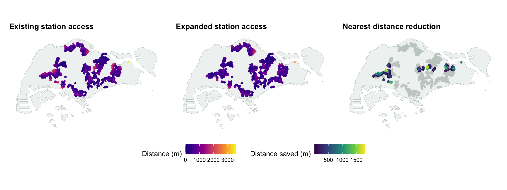
The western region contains 731 of the buildings newly within 800 metres, followed by 334 in the east. The north has no gains in this particular JRL and CRL Phase 1 scenario. This is a geographic distribution of changes in the current building layer, not a claim about all future housing or access needs.
th3_plot_access_detail(res)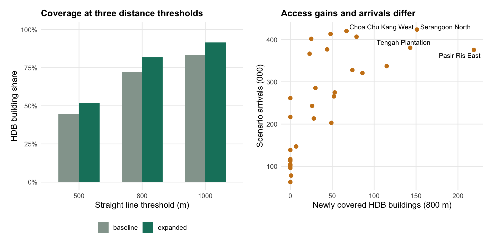
Pasir Ris East brings the largest number of building records newly inside 800 metres (219), while Serangoon North has the largest main scenario arrivals allocation. The rankings answer different questions. A station with a modest ridership estimate can still improve geographic access, so the ridership ranking alone should not set priorities for station entrances or local access improvements.
kable(extensions$access_regions, digits = 1, caption = "Access changes by planning region")| region | buildings | newly_covered | mean_improvement_m | median_before_m | median_after_m |
|---|---|---|---|---|---|
| WEST REGION | 3206 | 731 | 216.9 | 625.4 | 440.3 |
| NORTH-EAST REGION | 3059 | 221 | 86.9 | 387.3 | 363.6 |
| CENTRAL REGION | 2703 | 34 | 6.0 | 452.4 | 451.7 |
| NORTH REGION | 2092 | 0 | 0.0 | 640.6 | 640.6 |
| EAST REGION | 2376 | 334 | 135.1 | 709.7 | 614.5 |
Limits. Each building counts once, regardless of floor area or residents. The HDB layer also includes nonresidential structures. The points are inside building footprints, not entrances. Straight line distance omits roads, crossings, fences and step free routes. Thus 800 metres is a comparison threshold, not a verified walking catchment. The additional analysis identifies locations for further checks rather than estimating passenger numbers or social equity.
Robustness and remaining spatial error
How much do assumptions change the conclusion?
I hold origin demand fixed and compare five MCI assumptions. The main case uses the fitted coefficients. Two cases change the magnitude of distance decay by 25%. Two change the overall attraction score of new sites to 0.5 or 1.5 times the main value. These are transparent stress tests, not fitted alternatives or statistical confidence intervals. I also show calibrated Huff to test dependence on the attraction specification.
kable(extensions$assumptions, digits = 2)| assumption | distance_factor | new_multiplier |
|---|---|---|
| Main MCI | 1.00 | 1.0 |
| Weaker distance decay | 0.75 | 1.0 |
| Stronger distance decay | 1.25 | 1.0 |
| New site attraction x0.5 | 1.00 | 0.5 |
| New site attraction x1.5 | 1.00 | 1.5 |
| Calibrated Huff | 1.00 | 1.0 |
kable(extensions$sensitivity[, .(assumption, new_share_pct = 100 * new_share,
upgraded_change, largest_new_site)], digits = 2)| assumption | new_share_pct | upgraded_change | largest_new_site |
|---|---|---|---|
| Main MCI | 11.00 | 1985898.5 | Serangoon North |
| Weaker distance decay | 11.35 | 2077666.7 | Choa Chu Kang West |
| Stronger distance decay | 10.74 | 1868957.5 | Choa Chu Kang West |
| New site attraction x0.5 | 5.91 | 2361217.9 | Choa Chu Kang West |
| New site attraction x1.5 | 15.46 | 1662138.8 | Serangoon North |
| Calibrated Huff | 10.50 | -308542.9 | Serangoon North |
Across the five MCI assumptions, the new site share ranges from 5.9% to 15.5%. The top new site also changes. Calibrated Huff gives aggregate losses at the seven upgraded interchanges, whereas MCI gives gains because it includes line count. Therefore the sign of interchange impact is model dependent and should not be presented as a firm prediction.
th3_plot_sensitivity(res)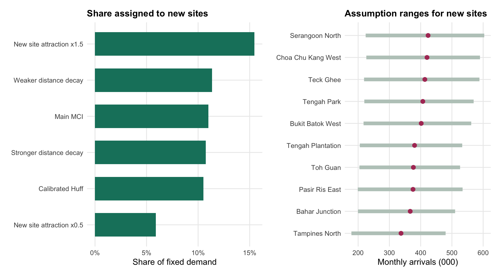
Changes in the new site attraction assumption produce a wider range than the tested distance changes. This directs the next data collection effort towards the activity and service expected around proposed stations, such as jobs, retail and bus frequency. The present dataset cannot identify their future values, so I keep those assumptions visible rather than adding invented observations.
Is the remaining error spatially patterned?
I test the log ratio log1p(observed) - log1p(predicted) at the 184 existing stations. It describes proportional underprediction and overprediction without letting only the largest station totals determine the result. Following Chapters 8 and 9, I use symmetric nearest neighbour links, row standardised weights and 999 permutations. I repeat the test with 6, 8 and 10 neighbours. These are exploratory diagnostics on the evaluated model, not another independent test set.
xy <- as.matrix(models$test_stations[, .(x, y)])
nb <- spdep::knn2nb(spdep::knearneigh(xy, k = 8), sym = TRUE)
weights <- spdep::nb2listw(nb, style = "W")
residual_ratio <- log1p(models$test_stations$observed) - log1p(models$test_stations$predicted)
set.seed(20261114)
spdep::moran.mc(residual_ratio, weights, nsim = 999, alternative = "greater")
Monte-Carlo simulation of Moran I
data: residual_ratio
weights: weights
number of simulations + 1: 1000
statistic = 0.12561, observed rank = 1000, p-value = 0.001
alternative hypothesis: greaterkable(extensions$spatial_diagnostics, digits = 3)| neighbours_k | moran_I | p_value | permutations |
|---|---|---|---|
| 6 | 0.120 | 0.001 | 999 |
| 8 | 0.126 | 0.001 | 999 |
| 10 | 0.114 | 0.001 | 999 |
Moran’s I is positive across all three neighbour settings, with permutation p values of 0.001. The October residual map therefore deserves attention beyond its individual large errors. Missing geographic factors may affect nearby stations together. This supports caution about using the model for local capacity decisions, but does not establish which omitted variable causes the pattern.
Conclusions and planning implications
The selected MCI model gives new sites about 11.0% of fixed demand in the main scenario. It also increases allocation to the seven upgraded interchanges. Yet October station WAPE is 49.5%, the residuals are spatially patterned and the interchange result changes under Huff. These estimates are suitable for comparing stated assumptions, not setting service capacity on their own.
The accessibility comparison supplies a separate planning result: 1,320 existing HDB building records become newly within 800 metres of a station. The largest regional gain is in the west. Pasir Ris East leads in newly covered buildings, while Serangoon North leads the main arrival allocation. Both access gains and potential demand deserve attention when prioritising site visits.
For public safety, the results point to locations for reviewing crossings, pedestrian routes, entrance access and crowd management. The estimated interchange gains make Hougang and Ang Mo Kio candidates for more detailed checks. However, monthly destination arrivals do not reveal peak simultaneous occupancy, transfer volumes or station capacity. The analysis cannot demonstrate crowding, accident reduction or a safety benefit. Those decisions need route based walking analysis, peak flow measurements and site capacity information.
Further work should obtain network travel times, employment and service frequency measures, then validate again before making stronger ridership claims. Forecasting total future demand also requires new origins and an explicit population or land use scenario. The Executive Summary presents the main findings and their limits.
References and reproducibility
- Take-home Exercise 3 brief.
- Course Chapter 15: Processing and Visualising Flow Data.
- Course Chapter 16: Calibrating Spatial Interaction Models with R, especially sections 16.8.6 and 16.8.9.
- Course Chapter 18: Huff market area analysis.
- Course Chapter 17: Modelling Geographical Accessibility.
- Course Chapter 8: Spatial Weights and Chapter 9: Global Spatial Autocorrelation.
- LTA DataMall dynamic datasets and API documentation.
- LTA static datasets.
- HDB Existing Building.
- Station coordinates provided by the assignment, revision recorded in the data manifest.
AI assistance was used for code organisation, debugging and drafting explanations. Data provenance, transformations and numerical checks are recorded in the project. The final submission still requires the author’s review of the analysis and conclusions.
packages <- c("stats", "sf", "data.table", "ggplot2", "patchwork", "leaflet", "knitr", "DT", "spdep", "ggrepel")
kable(data.table(package = packages,
version = vapply(packages, function(x) as.character(packageVersion(x)), character(1))))| package | version |
|---|---|
| stats | 4.5.2 |
| sf | 1.1.0 |
| data.table | 1.18.2.1 |
| ggplot2 | 4.0.3 |
| patchwork | 1.3.2 |
| leaflet | 2.2.3 |
| knitr | 1.51 |
| DT | 0.34.0 |
| spdep | 1.4.2 |
| ggrepel | 0.9.7 |